Кейс · B2B SaaS · Web + Mobile
Цифровая платформа для винодельни
Система автоматизации производственных процессов на винодельнях. Она заменяет бумажные журналы и Excel единой системой для агрономов, виноделов и лаборантов, применяет искусственный интеллект и имеет модульную структуру, охватывая весь цикл: от лозы до бутылки.
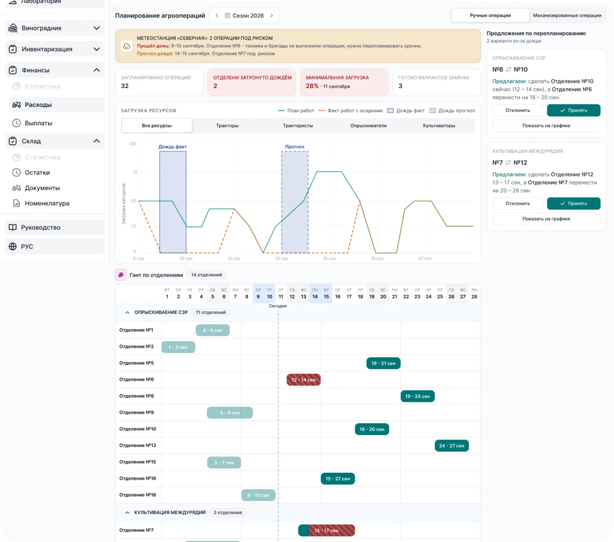
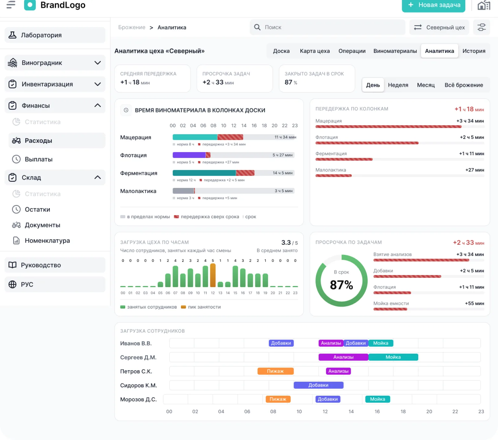
- Роль
- Продуктовый дизайнер
- Срок
- Июль 2023 - н. в.
- Платформы
- Web, iOS, Android
- Команда
- Дизайнер, PM, 2 аналитика, 40+ разработчиков, 5 QA, и др.
- Мой вклад
- Исследования, UX, UI, дизайн-система, менторинг
Коротко о кейсе
Винодельня жила на бумажных журналах, таблицах и чатах: задачи терялись, анализы опаздывали, погоду сверяли вручную. Мы собрали единую платформу из 60 модулей: от агроплана и прогноза рисков до лаборатории и аналитики цеха. Она работает на компьютере в офисе и на телефоне в поле. Основная боль предприятия - одна ошибка и потери в десятки миллионов. В данном кейсе я покажу самые интересные модули.
01 · Контекст
Для кого и зачем
Предприятие полного цикла: 285 отделений виноградника, 6 цехов и 100+ ёмкостей. Около 300 сотрудников в четырех ролях работают в разных условиях: в поле, в цеху, в лаборатории и в офисе.
Поле · смартфон
Агроном
Цель
Вовремя защитить урожай и не сорвать сезонные операции.
Боль
Погода, техника и планы живут в разных файлах и чатах.
Цех · планшет, ПК
Винодел / технолог
Цель
Держать под контролем каждую ёмкость и партию.
Боль
Данные разбросаны по журналам, о проблемах узнаёт поздно.
Лаборатория · ПК, телефон
Лаборант
Цель
Выполнять забор анализов точно и в срок.
Боль
Заявки приходят устно, очередь и сроки не видны.
Офис, цех · ПК
Руководитель цеха
Цель
Видеть узкие места и загрузку людей.
Боль
Отчёты собирает вручную в конце смены.
02 · Проблема
Как было до системы
Производственные знания жили в бумажных журналах, Excel и личных чатах. Это стоило времени, денег и урожая.
Было
03 · Исследование
Что мы узнали
Три недели погружения: интервью, наблюдение за сменами и аудит всех артефактов, которыми пользовались сотрудники.
Инсайт 1
Решения принимают по привычке, а не по данным
Агрономы сверяли три источника погоды и опирались на опыт. Системе нужно не показывать данные, а подсказывать действие.
→ Решение
Рекомендации и кнопки действий прямо на экранах риска.
Инсайт 2
Руки и условия определяют интерфейс
В цеху работают в перчатках, в поле - на солнце и без стабильной связи.
→ Решение
Крупные зоны нажатия, высокий контраст, состояния без сети.
Инсайт 3
Статус важнее детали
Руководителю нужно за секунды понять, что просрочено и где узкое место.
→ Решение
Статусы, счётчики и цветовые сигналы вместо длинных таблиц.
Принципы дизайна
Сначала действие, потом данные
Система предлагает, а человек решает
Читается в перчатках и на солнце
Один паттерн на все модули
04 · Процесс
Как мы шли к решению
Работали итерациями по модулям: небольшими релизами, которые сразу проверялись на реальных сотрудниках.
2 мес.
Исследование
- 50+ интервью и наблюдение за сменами
- Аудит журналов и Excel-файлов
- Карта ролей и сценариев
3 нед.
Структура
- CJM по четырём ролям
- Карта модулей и навигация
- Карточная сортировка меню, 285 участников
2 мес.
Прототипы
- Lo-fi → hi-fi по модулям
- 5 раундов юзабилити-тестов, 20 сотрудников
- SUS 78 на финальном прототипе
Параллельно
Дизайн-система
- Токены цвета, типографики, отступов
- 70+ компонентов и паттерны данных
- Документация для разработки
Постоянно
Запуск и итерации
- Дизайн-ревью реализации
- Метрики использования и обратная связь
- Релизы раз в две недели
05 · Структура продукта
60 модулей - один паттерн
Навигация построена по производственному циклу: от виноградника до розлива. Общие паттерны - список и деталь, статусы, графики - переиспользуются во всех модулях.
Виноградник
Участки · Агроплан · Болезни · Карта
Метеоданные
Агрориски · Станции · Прогноз погоды · Агрономия
Винодельня
Ёмкости · Виноматериалы · Переработка · Операции · Розлив · Тех. карты
Лаборатория
Заявки на анализы · Результаты · Журнал
Склад и инвентаризация
Остатки · Документы · Номенклатура
Финансы и интеграции
Расходы · Выплаты · Отчётность · Интеграция с 1С
Другие второстепенные модули
Тех. план · Лоты · Кликер · Гараж итд.
06 · Ключевое решение 1 / 7
Единая доска задач и нарядов
Основа всей системы: любое поручение в цеху и в поле живёт в одном месте - с владельцем, сроком и историей.
ПРОБЛЕМА
Задачи терялись между сменами и чатами. У каждого участка были свои «неформальные» статусы, а просрочки обнаруживались постфактум.
РЕШЕНИЕ
Канбан «Входящие → Выполняются → Можно проверять» с настраиваемыми колонками, карточкой с номером, сроком и исполнителем и быстрым созданием задачи прямо в колонке.
ЭФФЕКТ
Время постановки задачи: 10 → 2 мин (−80%). Доля задач в срок: 61% → 87%.
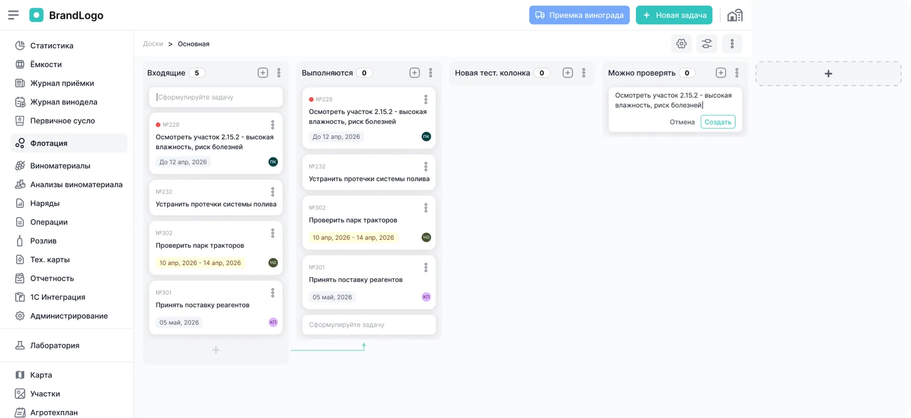
Ключевые действия
- Согласовал единый набор статусов с технологами, лаборантами и агрономами
- Заложил паттерн карточки и колонки, который затем переиспользовали лаборатория и переработка
- Добавил быстрое создание в колонке: меньше кликов, чем в отдельной форме
07 · Ключевое решение 2 / 7
Лаборатория: очередь заданий на анализ
Лаборант и винодел работают в одном потоке: от заявки до результата, привязанного к ёмкости.
ПРОБЛЕМА
Заявки приходили устно и в чатах, лаборант не знал, какие показатели нужны для партии. Результаты записывались отдельно от ёмкости.
РЕШЕНИЕ
Inbox заданий со счётчиками «на сегодня / запланированные / просроченные», пошаговый статус от «Открыто» до «Завершено» и деталь с набором анализов и журналом изменений.
ЭФФЕКТ
Просроченные анализы: 31% → 18% (−42%). Время до взятия в работу: 3 ч → 25 мин.
Ключевые действия
- Прошёл путь пробы от забора до результата вместе с лаборантами
- Выбрал master-detail: очередь слева, деталь справа, без лишних переходов
- Вывел главное действие «Взять в работу» в постоянную зону внизу
08 · Ключевое решение 3 / 7
Ёмкость: вся картина на одном экране
Ёмкость - центральный объект производства. Карточка собирает состав, анализы, операции и температуру.
ПРОБЛЕМА
Данные о ёмкости были разбросаны по журналам и таблицам. Температуру брожения проверяли обходом, выход за порог замечали с опозданием.
РЕШЕНИЕ
Карточка с вкладками, история приёмок с ключевыми анализами и график температуры с коридором, порогами и маркерами тревог рядом со статусами датчика и клапана.
ЭФФЕКТ
Реакция на выход температуры за порог: 90 → 27 мин (−70%). Поиск данных по ёмкости: 6 мин → 20 сек.
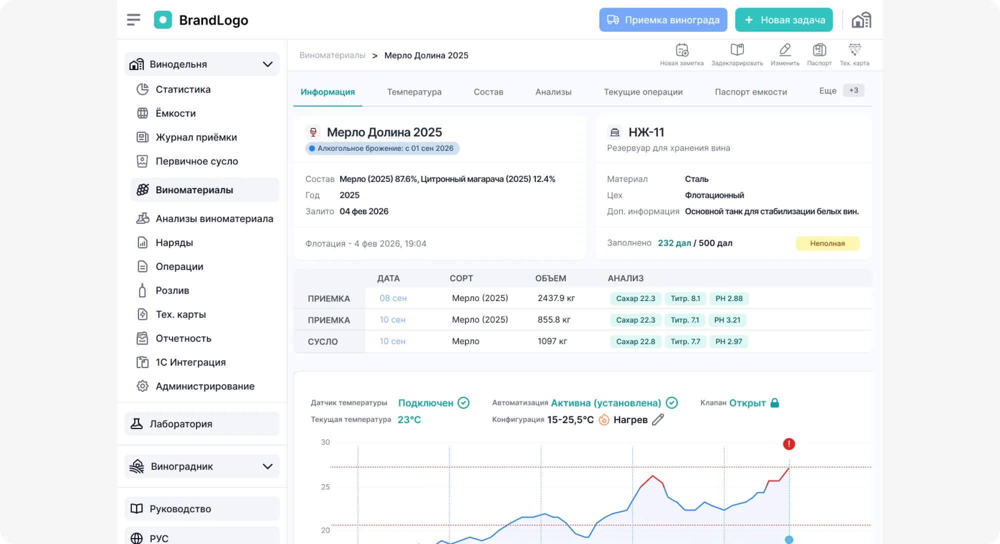
Ключевые действия
- Спроектировал иерархию информации: сначала состояние, потом история
- Придумал паттерн графика с коридором и пороговыми линиями, который затем использовали на станциях и в болезнях
- Описал состояния датчика: на связи, нет связи, ручной режим
09 · Ключевое решение 4 / 7
Переработка и аналитика цеха
План смены и аналитика образуют петлю: сегодня распределяем виноград, завтра видим, где потеряли время.
ПРОБЛЕМА
План переработки вели в таблицах: не видно загрузки прессов и остатка нераспределённого сырья. Узкие места определяли «по ощущениям», отчёты по смене собирали вручную.
РЕШЕНИЕ
Планирование: KPI-панель, таймлайн загрузки прессов и цепочка «виноград → фракции → ёмкости». Аналитика: передержка в колонках против нормы, просрочка задач и загрузка людей по часам.
ЭФФЕКТ
План смены: 45 → 11 мин (−75%). Простой прессов: −22%. Передержка в колонках: −31%.
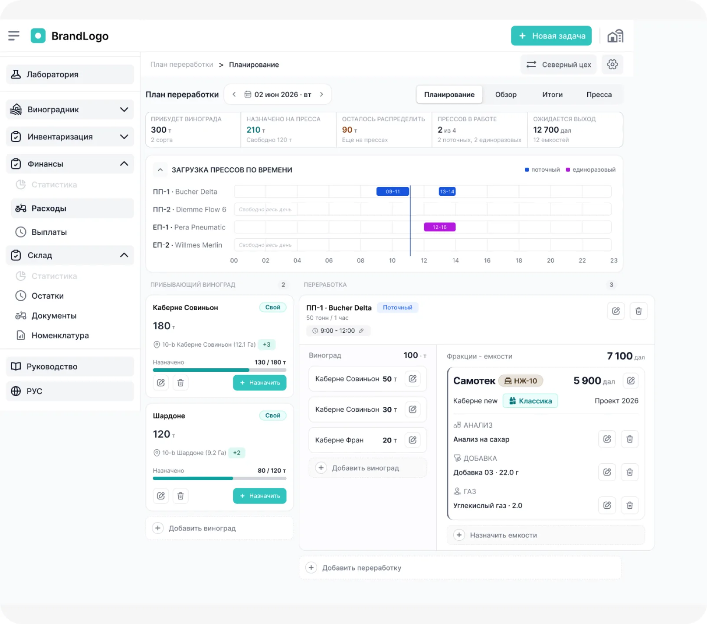
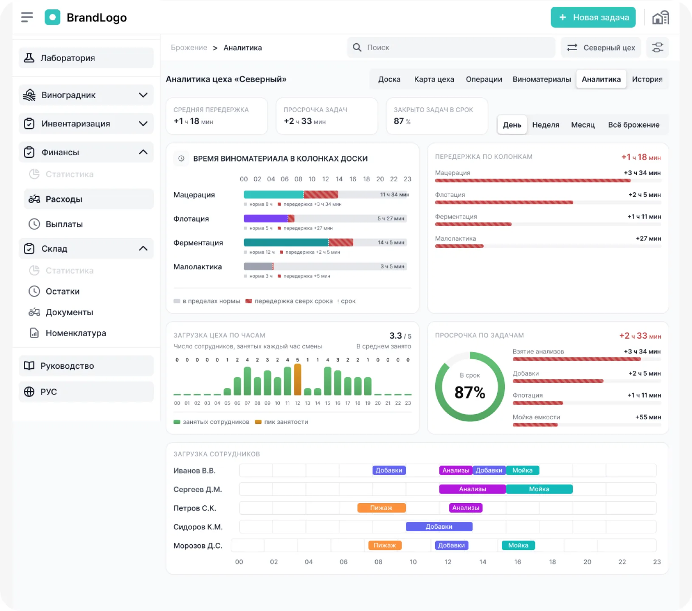
Ключевые действия
- Разобрал сценарий приёмки и прессования с технологами и собрал распределение «из карточки сырья сразу в пресс»
- Отобрал для руководителя только метрики, по которым принимаются решения
- Цветом выделил только отклонения от нормы, остальное оставил нейтральным
10 · Ключевое решение 5 / 7
Агроплан: перепланирование за пару кликов
Дождь, техника и бригады постоянно сдвигают планы. Система показывает последствия и предлагает варианты.
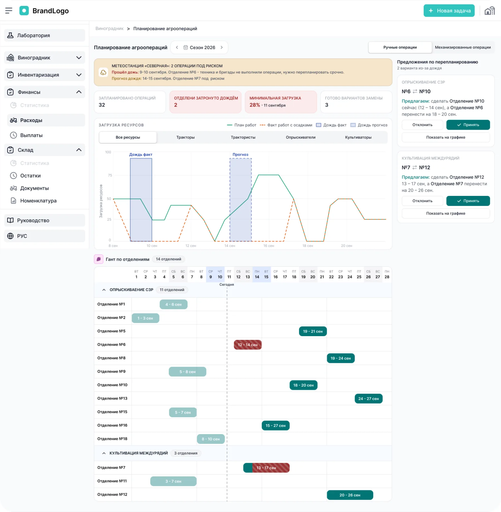
Проблема
Перепланирование после осадков делали вручную в Excel и по звонкам. Техника простаивала или выезжала в мокрое поле, влияние погоды на загрузку ресурсов не было видно.
Решение
Плашка метеорисков, график загрузки «план против факта» с наложением осадков, Гант по отделениям и блок «Предложения по перепланированию»: система предлагает, человек принимает или отклоняет.
Эффект
Перепланирование после дождя: 3 ч → 15 мин. Простой техники и бригад: −24%.
Ключевые действия
- – Изучил, как агроном принимает решение о переносе, и предложил модель «система предлагает - человек подтверждает»
- – Спроектировал наложение дождя на график нагрузки, чтобы причина переноса была видна сразу
- – Согласовал с аналитиками и разработкой правила подбора вариантов замены
11 · Ключевое решение 6 / 7
Агрориски: заморозки, окна обработки, болезни
Погода превращается в конкретные действия: где, когда и что делать, с привязкой к участкам, технике и фазе вегетации.
ПРОБЛЕМА
О заморозках узнавали из общих прогнозов, окна опрыскивания искали вслепую, профилактику назначали по календарю. Пороги риска хранились «в головах» агрономов.
РЕШЕНИЕ
Прогноз заморозков по участкам, часовая шкала окна опрыскивания с условиями препарата, страница вспышки с динамикой и настройка порогов по фазам вегетации без участия разработчиков.
ЭФФЕКТ
Повторные обработки из-за погоды: −28%. Профилактика в срок: 54% → 83%. Поражённая площадь в сезон заморозков: −35%.
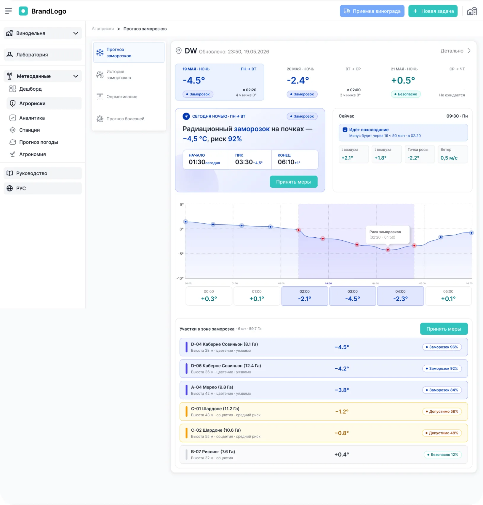
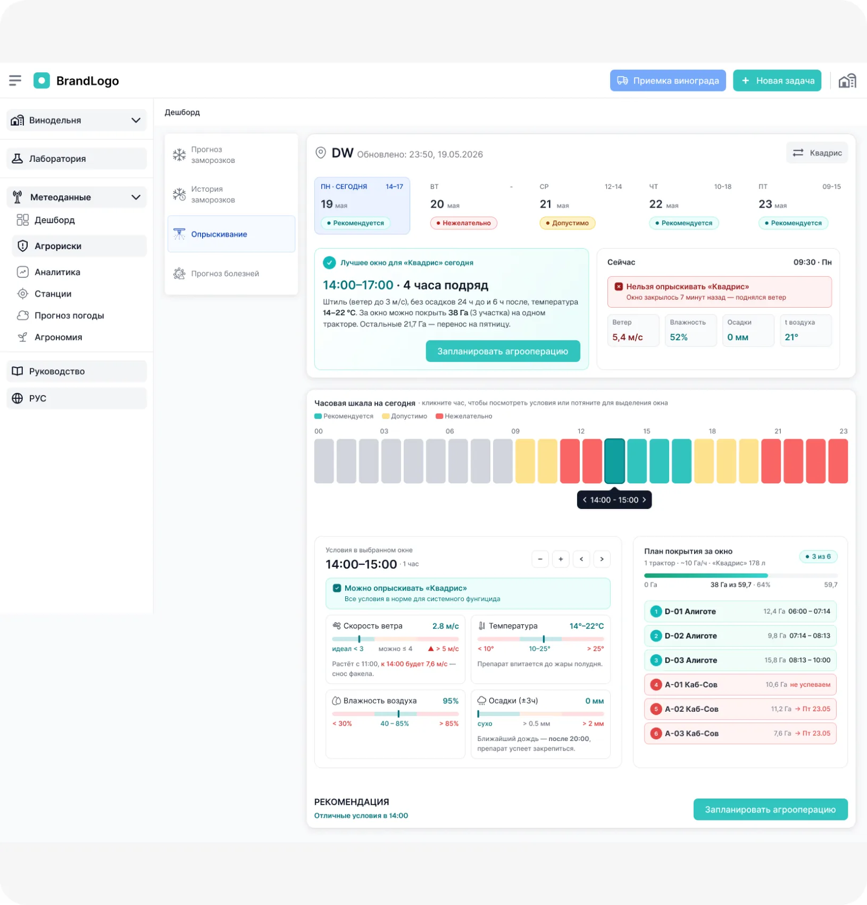
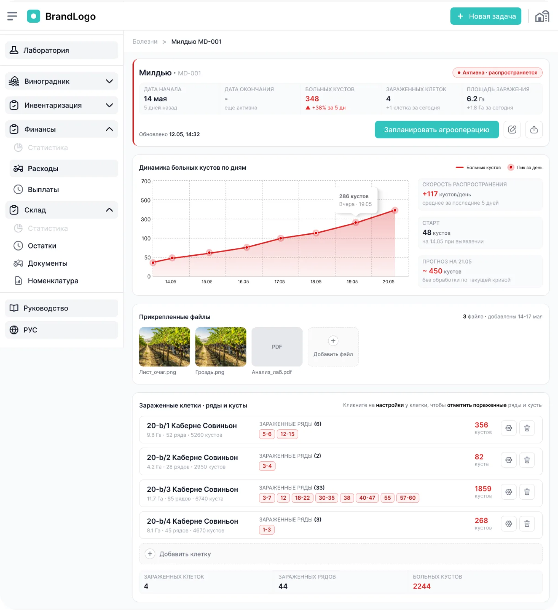
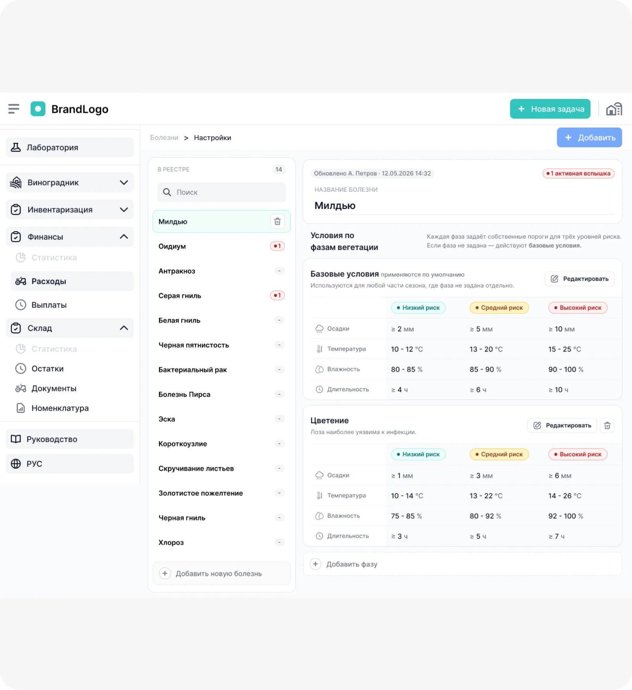
Ключевые действия
- Перевёл регламенты препаратов и пороги риска в понятные состояния: рекомендуется, допустимо, нежелательно
- Построил цепочку «риск → рекомендация → действие» и вынес действие на каждый экран
- Спроектировал настройки с наследованием: базовые условия и исключения по фазам
- Вынес правила прогноза в интерфейс, чтобы агрономы управляли ими без разработчиков
12 · Ключевое решение 7 / 7
Мобильное приложение для поля и цеха
Те же сценарии, но под одну руку, перчатки и нестабильную связь.
ПРОБЛЕМА
Десктопный интерфейс на телефоне неудобен, фото с места не прикладывались к задаче, а тревоги по температуре терялись среди прочих событий.
РЕШЕНИЕ
Нативные паттерны iOS и Android: задачи с вкладками «Автор / Исполнитель», создание в несколько касаний с вложениями, список ёмкостей с группой «требуют внимания» и карточка тревоги с действием «Создать задачу на охлаждение».
ЭФФЕКТ
70% задач создаётся с телефона. Задач с фото-подтверждением: 12% → 58%. От тревоги до задачи: 5 мин → 40 сек.
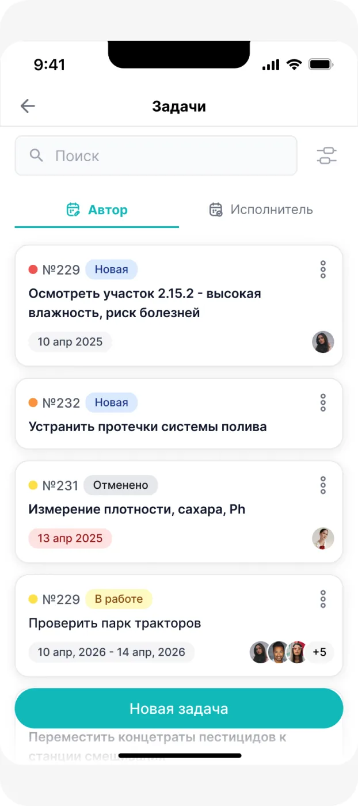
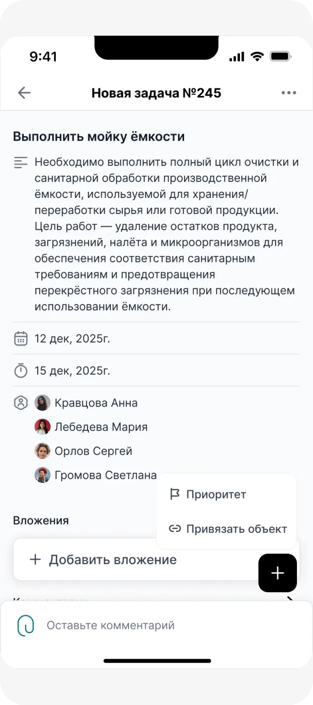
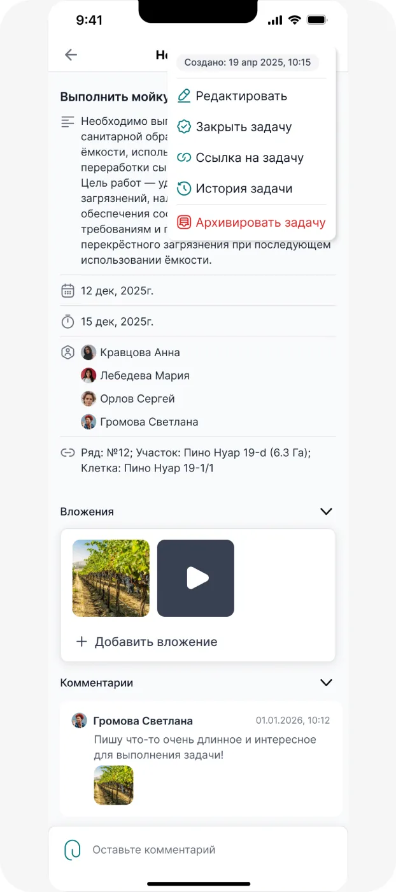
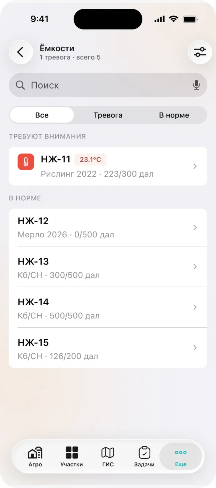
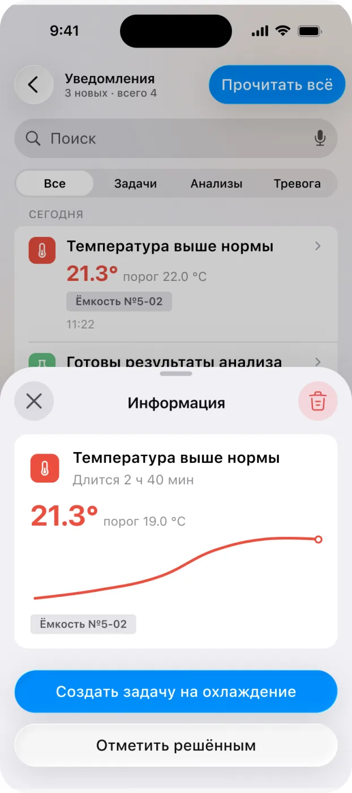
Ключевые действия
- Адаптировал сценарии web под одну руку и короткие сессии
- Сравнил 11 вариантов списков и карточек ёмкостей и уведомлений, выбрал по обратной связи команды
- Проверил формы на реальных устройствах в цеху
- Мобильное приложение тестировали в двух вариантах (iOS, кроссплатформ)
13 · Дизайн-система
Система, на которой растёт продукт
Единые токены и компоненты позволили собирать новые модули из готовых частей, а разработке - реже возвращать задачи.
Цвет
Типографика
- Заголовок экрана, 24
- Основной текст и данные в таблицах, 16
- Подписи и служебные статусы, 12
Паттерны данных
14 · Результаты
Что изменилось в работе предприятия
Данные за первые шесть месяцев после запуска модулей: по логам системы и опросам сотрудников.
15 · Выводы
Что я вынес из проекта
Что получилось
Модель «система предлагает - человек решает» прижилась: агрономы принимают большинство предложенных вариантов перепланирования. Единые паттерны ускорили запуск новых модулей.
Что было сложным
Совмещать разный уровень цифровой грамотности и условия работы: перчатки, солнце, слабая связь. Приходилось упрощать интерфейс без потери данных.
Что сделал бы иначе
Раньше подключил бы продуктовую аналитику и проводил тесты прямо на виноградниках, а не только в офисе.
Дальше
Офлайн-режим для поля, push-тревоги по ёмкостям и рекомендации на основе истории сезонов.
Другие проекты
Можете ознакомиться с моими другими проектами


Блок для связи.
Поработаем вместе?
Напишите мне в телеграм
- Email:
- mountdsgn@mail.ru
- Phone
- +7 (918) 321-26-35